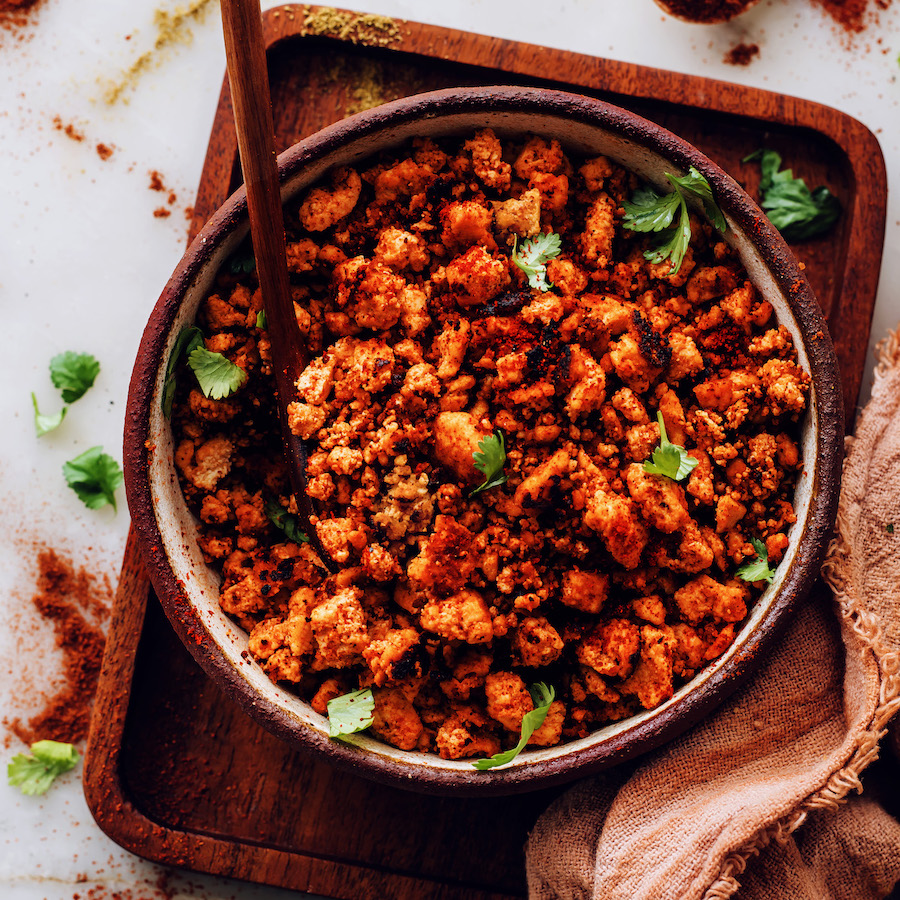

Vegan Chorizo

Description
Smoky vegan chorizo that tastes even better than the real thing! Plant-based, gluten-free, and perfect for bowls, burritos, and beyond. Just 10 ingredients, 1 bowl, and 30 minutes required!
Ingredients
- 14 ounce extra-firm tofu
- 4 tsp chili powder
- 1 Tbsp smoked paprika
- 1/8 tsp cayenne pepper
- 1/8 tsp ground cumin
- 2 Tbsp tamari
- 4 tsp apple cider vinegar
- 2 tsp maply syrup
- 1 Tbsp ketchup
- 2 Tbsp avocado oil for cooking
Instructions
- Drain tofu. With clean hands or a fork, roughly crumble the tofu in a medium mixing bowl. Aim for pieces about 1/4 – 1/2 inch in size.
- Add the chili powder, smoked paprika, cayenne, and cumin and carefully toss to evenly coat the tofu with the spices. Add the tamari, vinegar, maple syrup, and ketchup and toss one more time.
- Heat a 10-inch nonstick or well-seasoned cast iron skillet over medium heat. Add 1 Tbsp (15 ml) avocado oil and place half of your tofu mixture into the skillet (amounts as original recipe is written // adjust if altering batch size). Distribute the tofu mixture evenly over the pan so it’s in one thin layer. Cook for 3-4 minutes, undisturbed. It should be sizzling and popping slightly — if it’s not, turn up the heat a bit.
- Once the tofu is nicely browned on the bottom, use a spatula to flip sections as evenly as possible to brown the other side for another 3 minutes. Break up the tofu mixture slightly and toss to evenly brown all sides — about 2 minutes.
- Place in a dish, set aside, and repeat with remaining oil and tofu mixture.
- Best when fresh. Perfect for adding to bowls, burritos, tacos, or vegan paella. Store leftovers in the refrigerator for up to 3 days or freeze for up to 1 month. If you prefer sausage “patties” you can scoop the tofu before cooking and press into 2-inch rounds and freeze to cook later.